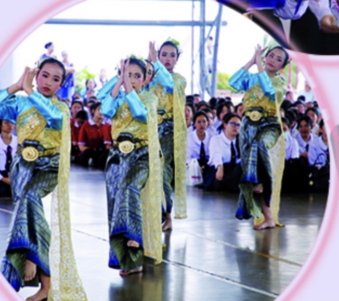

Student Activities
Student activities and Community Relations
It is an agency that aims to promote the quality development of learners to be good, virtuous, wise, and happy to live together in society with a conscience of being a Thai person, loving natural resources and the environment. Leadership personality, volunteer spirit, and creativity as a base about individual potential. The nature of the department's work consists of 3 main plans: the school's activity plan. It is a characteristic that aims to encourage students to express themselves and promote desirable characteristics ; Moral and Ethics Development Work Plan and Student Competencies Promote the qualities of a good leader-follower. Cultivate morals - ethics There are various activities Opportunities to learn how to work in a systematic way and to practice working in groups community relations plan. It is an activity that builds good relationships and understanding between community schools.
Orientation camp for Mathayom 4
The school has organized a relationship camp (orientation camp) for students in Mathayom 4 and the English Program department on May 21-22, 2019 in order to love learning to have the opportunity to do activities together. Learned about how to behave in school promote unity creativity Leadership-Follower Training assertiveness Build a good relationship between teachers and students, friends with friends and brothers and sisters by the form of group work and encourage students to learn happily at the Sacred Heart Convent School.
The first camp meet Mathayom 1
On 25-26 May 2019, the first meet Camp for Mathayom 1 “The 6th Meeting Camp” was organized with the goal of building relationships, unity, love and good leadership-followers. It also fosters relationships between friends, siblings, teachers and students. Cultivate students to be good people. There is love and pride in school.
Her Majesty Queen Suthida's Birthday Patcharasutha Phimonlaksana
June 3rd is an important day for all Thai to show their loyalty and honor under the dust of His Majesty the Queen . On the occasion of His Majesty's birthday Her Majesty Queen Suthida Phatcharasuthaphimonlaksana, the Queen, today the Executive Committee teacher and student together to offer blessings to the auspicious to honor for Her.
Wai Kru ceremony, academic year 2019
The Wai Kru ceremony for the academic year 2019 was held on June 13, 2019, which is a tradition that has been practiced for a long time. And it indicates the unique of the Thai people as well. Therefore, in order to preserve the traditions beautiful art and culture . The school has organized a day for the academic year 2019 up for students remembered the grace of the teachers who taught and keep pointing out what is good, both moral and ethical.
Lent candle offering activity
It is an activity that has both religious and cultural values which the Sacred Heart Convent School organizes annually to pay tribute to the royal family in the reign of King Rama 10 and to offer royal merit to His Majesty King Bhumibol Adulyadej Mahitalathibets Ramathibodi Chakri Naruebodinthorn Siamintharathirat Borommanatbophit and also the succession of Buddhism. and allow the youth to practice "Buddhist's business... Piya Son of Buddhism", including for school personnel and parents to make merit, offer food to monks and dry food and donate food together to create unity. Build a good relationship between home, school and community.
The Birthday Anniversary of His Majesty King Rama 10
On the occasion of the birthday of His Majesty King Wachiralongkorn MahisornBhumibol Ratchawarangkul Kitisiri Somboon Adulyadej Siammintrathibet Ratchawarodom Borommanat Bophit Phra Wachiraklao Chao Yu Hua, the 10th reign of the Chakri dynasty His Majesty King Bhumibol Adulyadej's 67th birthday on July 28, 2019 with loyalty and to honor under His Majesty the King, administrators, teachers and students of the Sacred Heart Convent School join the blessing Chaimongkol to honor His Majesty and a dance of blessings by high school students.
Her Majesty Queen Sirikit's Birthday
August 12 is the birthday of Her Majesty Queen Sirikit. Her Majesty the Queen The Queen Mother . lt is also "Mother's Day" as well. Therefore, the administrators, teachers and students participated. Organize activities to honor devotion and the infinite gratitude. However, the organization of activities is also an expression which the filial piety, the grace of the Mother of God, the mother of the city and the birth mother.

National Youth Day activities
September 20th of every year is National Youth Day. It is considered an auspicious day. Another day due to the birthday of two Chakri monarchs, namely King Chulalongkorn and King Ananda Mahidol. Both of which he ascended to the throne while he was still young to honor and honor children And youth who are good people, study well, behave well and do good things for the public, the school has organized the National Youth Day event. The certificate was given to outstanding youth. Different types on National Youth Day To be a good role model for children and youth in future generations to continue.
Birthday Anniversary of His Majesty King Bhumibol Adulyadej and Father's Day
December 5th of every year is a lajhhjvday to celebrate the King's birthday. His Majesty King Bhumibol Adulyadej Maha Bhumibol Adulyadej the Great and it is Father's Day. with His Majesty's grace that he has for the Thai people in various ways. He is the father of Thai people who is full of mercy, is the father of the nation that the people adore with loyalty with gratitude. Teachers administrators and students of the Sacred Heart Convent School therefore participated in activities to commemorate His Majesty by offering the bush and paying homage pay homage to the royal portrait meditating for royal merit and jointly vowed that will adhere to follow in His Majesty's footsteps by doing good deeds and being a good person of the nation.
Home